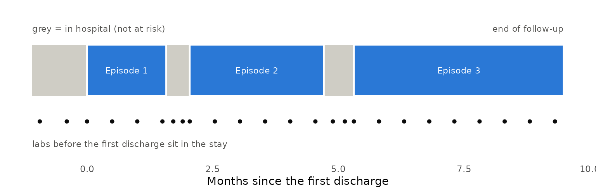
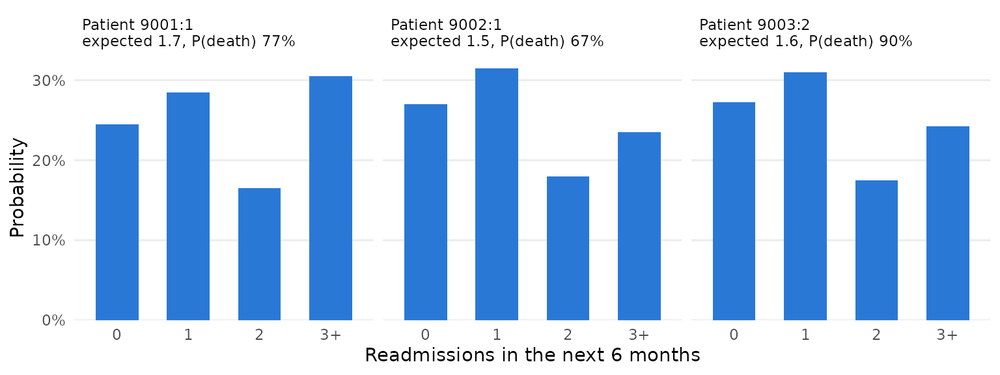

The backward joint model assumes each patient has one terminal event. Many clinical processes do not: a heart-failure patient is discharged, readmitted, discharged again, and so on, until death or the end of follow-up. This page shows how to use BJM when events recur, using hospital readmissions and death as the running example, and answers two questions at a discharge: what the next event will be, and how many recurrences there will be.
| Question | Function |
|---|---|
| Is the next event a readmission or a death, and by when? | predictRisk() |
| How many readmissions will there be in the next 6 months? | predictRecurrentCount() |
The idea: restart the clock at every discharge
Cut each patient’s history into episodes. An episode starts at a discharge (time 0 on its own clock) and ends at the next readmission, at death, or when follow-up stops. Within an episode the situation is exactly the one BJM was built for: one event, of one of two types, preceded by biomarker measurements. So an episode is treated as a “patient”, with these additions:
- the clock restarts at the discharge, so a readmission’s time in hospital is not time at risk;
- labs drawn during a stay, or before the first discharge, precede the episode they help predict and are kept with negative times;
- the number of the episode (1st discharge, 2nd, …) is a covariate, so a patient’s earlier readmissions inform the later risk.
buildRecurrentEpisodes() does the cutting. Everything
after it is the ordinary BJM workflow.
Example data
BJM does not ship a recurrent-event data set, so we simulate a small cohort in the shape your own data would have. The code only makes the example data; skip to the next section if you have your own.
# One patient: time-to-readmission and type depend on age, sex, the number of
# previous readmissions and a patient-level frailty; a biomarker's trajectory
# in each episode depends on how long that episode lasts. Times are in months
# since the first (index) discharge.
simulate_patient <- function(id, follow_up = c(6, 12), max_episodes = 12) {
age <- rnorm(1, 70, 8); sex <- rbinom(1, 1, 0.5); age_c <- (age - 70) / 10
frailty <- rnorm(1, 0, 0.5)
u0 <- rnorm(1, 0, 0.5) + 0.8 * frailty; u1 <- rnorm(1, 0, 0.3)
end_of_follow_up <- if (is.null(follow_up)) Inf else runif(1, follow_up[1], follow_up[2])
stay <- function() max(0.08, rexp(1, 1 / 0.25)) # months in hospital
start <- 0; stay_before <- stay(); k <- 0
events <- list(); labs <- list(); starts <- numeric(0)
repeat {
k <- k + 1; starts[k] <- start
gap <- (-log(runif(1)) / (0.25 * exp(0.3 * age_c + 0.3 * sex + 0.25 * (k - 1) + frailty)))^(1 / 1.2)
dies <- rbinom(1, 1, plogis(-2 + 0.5 * gap + 0.3 * age_c + 0.3 * (k - 1)))
end <- start + gap
censored <- end > end_of_follow_up
stop_time <- if (censored) end_of_follow_up else end
# labs: two in the stay before this discharge, one at discharge, then
# a visit every half month while the patient is still at risk
t <- c(start - stay_before * c(0.7, 0.3), start)
j <- 1
while (start + 0.5 * j < stop_time) { t <- c(t, start + 0.5 * j); j <- j + 1 }
mean_lab <- 5 + u0 + (-0.3 + u1) * (t - start) + 0.4 * gap - 0.5 * gap * (t - start) +
0.05 * age_c + 0.2 * sex
labs[[k]] <- data.frame(id = id, t = t, biomarker = rnorm(length(t), mean_lab, 0.4))
row <- function(time, status, discharge = NA_real_)
data.frame(id = id, time = time, status = status, discharge = discharge, age = age, sex = sex)
if (censored) { events[[k]] <- row(end_of_follow_up, 0L); break }
if (dies == 1) { events[[k]] <- row(end, 2L); break }
next_stay <- stay()
events[[k]] <- row(end, 1L, discharge = end + next_stay)
if (end + next_stay >= end_of_follow_up || k >= max_episodes) break
start <- end + next_stay; stay_before <- next_stay
}
list(events = do.call(rbind, events), labs = do.call(rbind, labs), starts = starts)
}
cohort <- lapply(1:300, simulate_patient)
events <- do.call(rbind, lapply(cohort, `[[`, "events"))
labs <- do.call(rbind, lapply(cohort, `[[`, "labs"))You need two tables.
events: one row per readmission, death or end of
follow-up.
head(events[events$id == 1, ], 5)
#> id time status discharge age sex
#> 1 1 1.575685 1 2.043283 74.16471 0
#> 2 1 4.711596 1 5.309283 74.16471 0
#> 3 1 9.484838 0 NA 74.16471 0time is when the event happened, status is
1 for a readmission, 2 for a death and
0 for the end of follow-up with nothing happening, and
discharge is when the stay that a readmission began ends
(NA when there is no stay: death, or follow-up ending).
Other columns are covariates.
labs: one row per measurement, on the same time
axis.
head(labs[labs$id == 1, ], 5)
#> id t biomarker
#> 1 1 -0.9399152 5.574503
#> 2 1 -0.4028208 4.606169
#> 3 1 0.0000000 3.231357
#> 4 1 0.5000000 3.219372
#> 5 1 1.0000000 3.522247Times before 0 are labs from the first hospital stay. The picture below shows what one patient’s data looks like once it is cut into episodes.

Step 1: cut the history into episodes
built <- buildRecurrentEpisodes(events, labs, time_variable_long = "t",
restart_variable = "discharge", lookback = Inf)-
restart_variable = "discharge"starts each new episode at the discharge that ended the stay, not at the readmission. Leave it out when an event takes no time (a tumour recurrence, say) and the next episode simply starts at the event. -
lookback = Infkeeps labs drawn before an episode’s start – in the stay before it – as negativetime_in_episode, but never reaching back past the previous event. The default,0, keeps only labs from the start on.
The result has two tables. episode_data has one row per
episode:
head(built$episode_data[built$episode_data$id == 1, ], 6)
#> id episode episode_id gap event_any event_type age sex
#> 1 1 1 1:1 1.575685 1 0 74.16471 0
#> 2 1 2 1:2 2.668313 1 0 74.16471 0
#> 3 1 3 1:3 4.175555 0 NA 74.16471 0gap is the length of the episode, event_any
says whether it ended in an event (rather than the end of follow-up),
event_type is 0 for a readmission and
1 for a death, and episode counts the
discharges. The labs, re-clocked, are in long_data:
head(built$long_data[built$long_data$id == 1,
c("id", "episode", "t", "time_in_episode", "gap", "biomarker")], 6)
#> id episode t time_in_episode gap biomarker
#> 1 1 1 -0.9399152 -0.9399152 1.575685 5.574503
#> 2 1 1 -0.4028208 -0.4028208 1.575685 4.606169
#> 3 1 1 0.0000000 0.0000000 1.575685 3.231357
#> 4 1 1 0.5000000 0.5000000 1.575685 3.219372
#> 5 1 1 1.0000000 1.0000000 1.575685 3.522247
#> 6 1 1 1.5000000 1.5000000 1.575685 2.684941time_in_episode is the time since that episode’s
discharge, negative for labs in the stay before it. Note that
gap is NA for an episode that has not ended,
which is how the prediction functions below recognise a patient who is
still at risk.
Step 2: fit
This is the usual two sub-models, fit on episodes instead of
patients. The survival sub-model uses gap as the time and
event_any as the event, with the episode number as a
covariate; the biomarker model is fit on the episodes that ended in an
event, as with pbc3.
One choice matters: group the biomarker model’s random
effects by episode (episode_id), not by patient
(id). A patient’s biomarker level is generally
different at the start of each episode, because the underlying
trajectory keeps moving, so one random effect per patient is the wrong
unit; each episode is its own “subject”, as it already is in the
survival sub-model. In a simulation in which the biomarker’s current
level drives the risk, grouping by patient left BJM clearly behind a
plain logistic regression on the last lab value (AUC for a readmission
within a month 0.65 against 0.75); grouping by episode closed the gap
(0.75 against 0.75).
surv_fit <- survivalSub(built$episode_data, Surv(gap, event_any) ~ age + sex + episode,
event_type ~ gap + age + sex + episode)
long_fit <- longitudinalSub(built$long_data[built$long_data$event_any == 1, ],
biomarker ~ time_in_episode + age + sex + gap + gap:time_in_episode,
~ time_in_episode | episode_id)Step 3: describe the patients to predict for
A new patient is described in the same two-table form, up to now: their earlier readmissions, then one last row saying “no event yet as of now”, and their labs so far. Here are three patients who have just been discharged, two for the first time and one for the second.
history_at_discharge <- function(p, k) {
now <- p$starts[k]
ev <- p$events[seq_len(k - 1), ] # earlier readmissions
last <- data.frame(id = p$events$id[1], time = now + 0.001, status = 0L, discharge = NA_real_,
age = p$events$age[1], sex = p$events$sex[1])
list(events = rbind(ev, last), labs = p$labs[p$labs$t <= now, ])
}
set.seed(7)
fresh <- lapply(5001:5040, simulate_patient, follow_up = NULL)
reach2 <- Filter(function(p) length(p$starts) >= 2, fresh) # patients with a 2nd discharge
chosen <- list(
list(p = fresh[[1]], k = 1), list(p = fresh[[2]], k = 1), list(p = reach2[[1]], k = 2))
histories <- lapply(chosen, function(x) history_at_discharge(x$p, x$k))
for (i in seq_along(histories)) { # give each prediction its own id
histories[[i]]$events$id <- histories[[i]]$labs$id <- 9000 + i
}
now_events <- do.call(rbind, lapply(histories, `[[`, "events"))
now_labs <- do.call(rbind, lapply(histories, `[[`, "labs"))
now <- buildRecurrentEpisodes(now_events, now_labs, time_variable_long = "t",
restart_variable = "discharge", lookback = Inf)
# each patient's last episode is the one still open
open <- now$long_data[now$long_data$episode == ave(now$long_data$episode, now$long_data$id, FUN = max), ]
head(open[, c("episode_id", "t", "time_in_episode", "gap", "biomarker", "event_type")], 4)
#> episode_id t time_in_episode gap biomarker event_type
#> 1 9001:1 -0.14213393 -0.14213393 NA 5.387458 NA
#> 2 9001:1 -0.06091454 -0.06091454 NA 5.468732 NA
#> 3 9001:1 0.00000000 0.00000000 NA 6.263731 NA
#> 4 9002:1 -0.05600000 -0.05600000 NA 5.488383 NAThe open episode’s gap and event_type are
NA, as they must be: what happens in it is what we are
predicting. Each episode_id appears once, so each
prediction is its own “subject”; if you want predictions for the same
patient at several discharges, give each its own id (the
discharges here already differ in episode, but the ids you
pass in should not repeat).
Step 4: the next event
predictRisk() is used exactly as before.
prediction_time = 0 is the discharge; if you predict some
time after it, give the time elapsed since the discharge, and include
the labs up to then.
risk <- predictRisk(open, long_fit, surv_fit, prediction_time = 0, horizon = 1,
time_variable = "time_in_episode",
survival_variable_all = list(), survival_trans_function = list())
round(data.frame(readmission = risk$risk_prob_1, death = risk$risk_prob_2), 3)
#> readmission death
#> 9001:1 0.413 0.108
#> 9002:1 0.327 0.068
#> 9003:2 0.509 0.171These are the probabilities that the next event happens
within a month and is a readmission, or a death. A longer
horizon gives, for instance, the probability of at least
one readmission in 3 months.
Step 5: the number of readmissions
predictRecurrentCount() simulates each patient forward,
episode by episode, and counts. The first episode is drawn given the
patient’s labs (the same distribution predictRisk() uses);
later ones are drawn from the model given the patient’s covariates, with
the episode number advanced. BJM has no model of how long a stay lasts,
so you supply observed stay lengths, which are resampled.
stay_lengths <- with(events, discharge[status == 1] - time[status == 1])
count <- predictRecurrentCount(open, long_fit, surv_fit, prediction_time = 0, horizon = 6,
time_variable = "time_in_episode", stay_lengths = stay_lengths,
n_sim = 400, max_stages = 30, seed = 1)
count
#> Predicted recurrences in (0, 6], 3 patient(s), 400 simulated paths each
#> mean expected count 1.624; P(>=1) 0.738; P(>=2) 0.434; P(death) 0.779
#>
#> episode_id mean_count p_count_0 p_count_1 p_count_2 p_count_3plus p_ge1 p_ge2
#> 9001:1 1.74 0.245 0.285 0.165 0.305 0.755 0.470
#> 9002:1 1.53 0.270 0.315 0.180 0.235 0.730 0.415
#> 9003:2 1.60 0.273 0.310 0.175 0.242 0.728 0.417
#> p_death
#> 0.772
#> 0.667
#> 0.897The simulated mortality here is far higher than in real heart
failure, so read the output as a format, not as clinical numbers.
count$summary has the expected number of readmissions, the
probability of at least one or two, and the probability of dying in the
window; count$counts holds every simulated path if you want
a different summary. The figure shows the whole distribution for each
patient.

Things to watch for
-
Time units. Use one unit throughout (here months).
horizon, the labs’ times andstay_lengthsmust all be in it. -
max_stages. Paths are stopped after this many episodes; the function warns, and setscount$capped, when that happens. Raise it for long windows or high-risk patients. -
Covariates that change over time. Record each one,
on each row of
events, as its value at the start of that row’s episode (age at the discharge, the number of earlier admissions), not at the readmission or death: a value measured at the event depends on how long the episode lasted and biases the survival sub-model. Biomarkers that change within an episode belong inlabs. -
Covariates that change by episode in the count
prediction. The episode number is advanced for you. If your
survival model uses other episode-specific covariates, such as the
length of the previous gap, pass
next_covariates = function(row, k)to update them. -
Death, or the end of follow-up, during a stay. Such
a patient was not back at risk, so
buildRecurrentEpisodes()ends their episodes at that readmission (with a message): record the stay’sdischargeas the time of death or of the end of follow-up when they were never discharged. A death in hospital is therefore not an out-of-hospital death, andpredictRecurrentCount()’s probability of death is that of dying after discharge. -
The outcome columns must exist in the prediction
data. When it comes from
buildRecurrentEpisodes()they do (asNA); if you build it by hand, add them.
What this assumes, and what it has been checked against
- Within an episode, the model is the backward joint model, and carries its assumptions. Across episodes, patients are linked only through their covariates and the episode number: only the first step of the count prediction uses the patient’s biomarkers, and a patient-level tendency to recur that is not in the covariates (a frailty) is not carried forward.
- The stay length is resampled from the data, independently of everything else.
- The survival sub-model treats a patient’s episodes as independent.
Its coefficients are still estimates of the gap-time model, but the
standard errors in
summary(surv_fit)ignore the correlation between a patient’s episodes and are too small. - Checks so far are simulations (kept outside the package): ordinary
BJM with one discharge per patient; several hospitalizations per
patient, with and without a patient-level frailty; and the count
prediction. In them, the predicted probabilities of the next event and
the expected counts were close to the truth, and ranked patients better
than logistic and Poisson regressions on the last lab value. A frailty
weakened the next-event predictions (calibration slopes fell from about
0.95 to 0.75-0.90). A joint frailty model from the
frailtypackpackage, which uses event history but no biomarkers, ranked patients much worse; a frailty model with biomarkers (trivPenal()) could not be compared, as it was too slow and does not fit labs measured afresh at each discharge. The simulated disease is not calibrated to any real one. - Nothing here has been checked on real data.